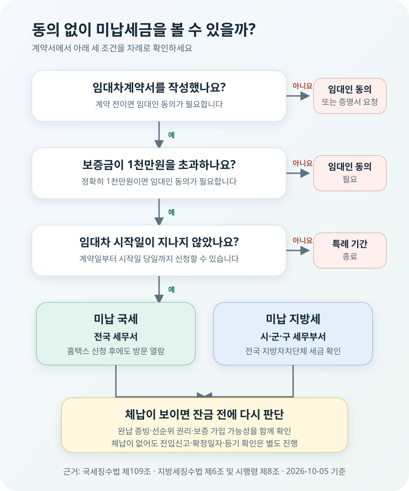

계약 후, 보증금 1천만원 초과, 임대차 시작일까지
집주인의 세금 사정을 확인하는 일은 계약 전이 가장 좋지만, 계약 전에 집주인이 동의하지 않으면 임차인이 임의로 열람할 수 없습니다. 대신 계약서를 쓴 뒤에는 일정 조건을 충족한 임차인에게 동의 없는 열람이 허용됩니다.
국세징수법 제109조와 지방세징수법 제6조는 임대차계약을 체결한 임차인이 대통령령으로 정한 금액을 초과하는 보증금을 맡긴 경우, 계약일부터 임대차 시작일까지 임대인 동의 없이 미납세금을 열람할 수 있도록 합니다. 국세징수법 시행령 제97조와 지방세징수법 시행령 제8조가 정한 금액은 각각 1천만원입니다.
| 현재 시점·조건 | 임대인 동의 | 실제 행동 |
|---|---|---|
| 계약서를 쓰기 전 | 필요 | 임대인 동의를 받아 열람하거나 최근 국세·지방세 납세증명서를 요청 |
| 계약 후, 보증금 1천만원 초과, 임대차 시작일까지 | 불필요 | 계약서와 신분증을 들고 국세·지방세를 각각 열람 |
| 계약 후라도 보증금 1천만원 이하 | 필요 | 임대인 동의를 받거나 임대인에게 납세증명서 요청 |
| 임대차 시작일이 지난 뒤 | 동의 없는 특례 기간 종료 | 임대인 협조를 받아 서류를 확인하고 보증금 보호 상태를 다시 점검 |
여기서 임대차 시작일은 계약서에 적은 시작일입니다. 실제 이사 날짜가 늦어졌다고 열람 기간이 자동으로 늘어나는 것은 아니므로, 잔금과 입주 준비에 밀려 마지막 날을 놓치지 않는 편이 좋습니다. 법은 ‘시작하는 날까지’라고 정하므로 시작일 당일도 포함되지만, 서류 보완이나 업무시간을 생각하면 며칠 앞서 확인하세요.
동의 없이 열람할 수 있다는 뜻이지 임대인에게 비밀로 처리된다는 뜻은 아닙니다. 세무서나 지방자치단체는 열람 사실을 임대인에게 통지합니다. 계약 관계가 불필요하게 틀어지지 않도록 “보증금 보호를 위한 통상 확인”이라고 먼저 알리는 것도 방법입니다.
국세와 지방세는 한 번에 끝나지 않습니다
국세는 국가가 걷는 세금이고, 지방세는 지방자치단체가 걷는 세금입니다. 담당 기관과 신청서가 다르므로 세무서에서 국세를 봤다고 지방세까지 확인한 것은 아닙니다. 반대로 구청 세무부서에서 지방세를 열람했어도 국세가 자동으로 따라오지 않습니다.
| 구분 | 방문할 곳 | 확인 범위 | 공통 제한 |
|---|---|---|---|
| 미납 국세 | 전국 세무서 | 체납액, 납부고지 뒤 납기 전인 국세, 신고했지만 내지 않은 국세 등 법정 항목 | 현장 열람만 가능, 복사·촬영 불가 |
| 미납 지방세 | 시·군·구청 세무부서 등 | 전국 지방자치단체의 체납액, 납기 전 고지액, 신고 후 미납액 등 | 현장 열람만 가능, 복사·촬영 불가 |
임대인이 직접 발급해 주는 국세·지방세 납세증명서와 임차인의 미납세금 열람은 성격이 다릅니다. 납세증명서는 임대인의 협조를 받아 서류로 보관할 수 있고, 미납세금 열람은 법에서 정한 임차인이 현장에서 내용을 확인하는 절차입니다. 계약 전에는 최근 납세증명서를 요청하고, 계약 후에는 법정 열람으로 다시 확인하면 자료의 시점과 진위를 한 번 더 대조할 수 있습니다.
계약서와 신분증을 챙겨 두 곳에 신청하세요
동의 없는 열람에는 임대차계약을 체결했다는 사실과 보증금 액수, 임대차 시작일을 보여 주는 계약서가 핵심입니다. 본인 확인용 신분증과 신청서를 함께 준비하세요. 공동임차인, 대리인, 법인 임차인처럼 신청인과 계약서 명의가 단순하지 않다면 위임장 등 추가 서류가 필요할 수 있으므로 방문 기관에 먼저 확인하는 편이 안전합니다.
- 계약서에서 세 가지를 확인합니다. 임대인 인적사항, 보증금이 1천만원을 초과하는지, 임대차 시작일이 언제인지 봅니다.
- 국세는 세무서에서 열람합니다. 국세청 홈택스에서 미납국세 열람 신청을 먼저 할 수 있지만, 신청만으로 결과가 온라인 발급되는 것은 아닙니다. 선택한 세무서에 방문해 열람해야 합니다.
- 지방세는 시·군·구 세무부서에 신청합니다. 전국 지방세를 조회하는 제도이므로 물건 소재지 외 접수 가능 여부와 담당 창구를 방문 전 확인하세요.
- 결과를 본 즉시 핵심을 정리합니다. 종이를 복사하거나 화면을 찍을 수 없으므로 세목, 금액, 납부기한 등 이후 판단에 필요한 내용을 창구 안내 범위에서 메모합니다.
국세청 안내는 2023년 4월부터 임차인이 전국 세무서에서 임대인 동의 없이 열람할 수 있도록 제도가 확대됐다고 설명합니다. 홈택스 모바일 안내도 신청 후 지정 세무서를 방문해야 하며 열람 내용을 교부·복사·촬영할 수 없다고 안내합니다.

보증금 2억5천만원, 11월 1일 시작 계약이라면
임차인 A가 10월 5일 보증금 2억5천만원의 전세계약을 쓰고 계약서상 임대차 시작일을 11월 1일로 정했다고 가정해 보겠습니다. A는 보증금 기준을 넘겼으므로 10월 5일부터 11월 1일까지 임대인 동의 없이 국세와 지방세를 열람할 수 있습니다. 11월 2일에 생각났다면 이 특례 기간은 이미 지났습니다.
A가 국세 2천만원의 미납 사실을 확인했다고 해서 그 금액을 잔금에서 임의로 빼거나 계약이 자동으로 취소되는 것은 아닙니다. 먼저 미납세금의 종류와 시점, 집의 시세, 등기부상 선순위 담보, 먼저 입주한 임차인의 보증금, 본인의 보증보험 가입 가능 여부를 함께 봐야 합니다. 임대인에게 납부를 요구하고 완납 사실을 확인한 뒤 잔금을 지급한다는 합의를 서면으로 남길 수 있지만, 기존 계약에 근거 없이 일방적으로 지급일을 어기면 임차인 쪽 채무불이행 문제가 생길 수 있습니다.
반대로 열람 결과가 ‘없음’이어도 전세가 안전하다고 확정할 수는 없습니다. 열람은 확인한 날의 미납세금을 보여 주며, 이후 생길 세금이나 등기되지 않은 다른 임대차, 주택 가격 하락까지 보증하지 않습니다. 입주·전입신고·확정일자, 등기부 재확인과 보증 가입 심사는 별도로 챙겨야 합니다.
체납세금이 있으면 내 보증금보다 항상 먼저일까요?
그렇지 않습니다. 세금이 있다는 이유만으로 모든 세금이 임차보증금보다 무조건 먼저 배당된다고 단정할 수 없습니다. 국세기본법 제35조와 지방세기본법 제71조에는 조세 우선 원칙과 함께 법정기일, 담보권·임차보증금과의 관계, 해당 부동산에 부과된 세금 등에 관한 여러 기준과 예외가 있습니다.
임차인의 순위도 계약일 하나로 정해지지 않습니다. 실제 주택 인도와 전입신고로 대항요건을 갖춘 시점, 확정일자, 다른 권리의 설정일 등을 함께 봅니다. 열람 결과에 금액이 표시됐다면 “세금 2천만원이니 집값에서 2천만원만 빼면 된다”는 식으로 계산하지 말고 법정기일과 해당 주택 관련 세금인지까지 전문가에게 확인하세요.
미납세금 열람은 계약을 계속할지 검토하게 해 주는 자료입니다. 실제 경매·공매에서 누가 먼저 받는지는 세금의 법정기일과 종류, 담보권, 임차인의 대항력·확정일자 등 개별 자료를 맞춰 판단해야 합니다.
체납이 확인되면 잔금 전에 해결 조건을 적으세요
가장 먼저 임대인에게 열람 결과를 알리고 완납 계획과 최근 납세증명서를 요청하세요. “잔금 전까지 납부한다”는 말만 듣기보다 납부기한, 증빙을 확인할 시점, 미이행 때 잔금·입주 일정을 어떻게 조정할지를 서면으로 합의하는 편이 좋습니다. 특약은 당사자 사이 약속일 뿐 과세관청의 권리나 임차인의 보증금 반환을 자동으로 보장하지 않는다는 점도 기억해야 합니다.
다음으로 주택 가격에서 선순위 부담을 한꺼번에 계산합니다. 최신 시세의 보수적인 값에서 근저당 채권최고액, 확인된 선순위 임차보증금, 미납세금 등 회수에 영향을 줄 수 있는 금액을 빼고도 내 보증금이 충분히 남는지 봅니다. 다가구주택이라면 다른 가구의 보증금 파악이 특히 어렵기 때문에 임대인의 자료 제공과 보증기관 심사가 중요합니다.
HUG·HF·SGI 등의 전세보증금 반환보증은 기관과 상품마다 주택가격, 선순위채권, 신청기한 등 조건이 다릅니다. 계약 때 가능하다는 중개사의 말만 믿지 말고 해당 기관에서 주소와 계약 조건으로 직접 확인하세요. 체납 규모가 크거나 임대인이 자료 제공·완납을 거부한다면 남은 계약금을 지급하기 전에 계약서와 특약을 변호사나 대한법률구조공단 등 전문 상담기관에 보여 주는 편이 안전합니다.
계약 해제도 자동으로 되는 것은 아닙니다. 체납 사실을 숨겼는지, 계약서에 체납 해소나 보증 가입을 조건으로 적었는지, 임대인이 이행할 수 있는지에 따라 달라집니다. 감정적으로 송금을 끊기 전에 요구사항과 기한을 서면으로 전달하고, 본인의 지급의무와 해제 요건을 함께 검토하세요.
자주 묻는 질문
월세 계약도 열람할 수 있나요?
전세인지 월세인지보다 임대차보증금이 기준입니다. 보증금이 1천만원을 초과하고 계약 후 임대차 시작일까지라면 동의 없는 열람 대상이 될 수 있습니다. 보증금이 정확히 1천만원이면 법의 표현인 ‘초과’에 해당하지 않으므로 임대인 동의가 필요합니다.
결과를 사진으로 남길 수 있나요?
아닙니다. 공식 안내는 열람 자료의 교부·복사·촬영을 허용하지 않습니다. 창구에서 허용하는 범위 안에서 필요한 내용을 메모하고, 확인한 날짜와 기관도 함께 기록하세요.
동의 없이 보면 집주인이 알게 되나요?
알게 됩니다. 관할 기관은 임대인에게 열람 사실을 통지합니다. 다만 통지된다는 이유로 법이 보장한 확인을 포기할 필요는 없습니다.
중개사나 가족이 대신 가도 되나요?
대리 신청에는 위임관계와 신분을 증명하는 추가 서류가 요구될 수 있습니다. 계약 명의자 본인이 가는 것이 가장 단순하며, 대리 방문 전 세무서와 지자체 담당 부서에 필요한 서류를 확인하세요.
입주·잔금 전에 확인할 것
- □ 계약서의 임대인, 보증금과 임대차 시작일을 확인했다.
- □ 보증금이 1천만원을 ‘초과’하는지 구분했다.
- □ 임대차 시작일 전에 국세와 지방세를 각각 열람했다.
- □ 계약 전이라면 임대인 동의 또는 최근 납세증명서를 받았다.
- □ 최신 등기부에서 근저당·압류·가압류를 다시 확인했다.
- □ 선순위 임차보증금과 주택 시세를 함께 점검했다.
- □ 체납이 있으면 완납 증빙과 잔금 지급 조건을 서면으로 정했다.
- □ 전입신고·확정일자와 반환보증 신청기한을 놓치지 않았다.
- □ 큰 체납이나 자료 거부가 있으면 지급 전 전문 상담을 받았다.
공식 근거
- 국가법령정보센터 — 국세징수법 제109조
- 국가법령정보센터 — 국세징수법 시행령 제97조
- 국가법령정보센터 — 지방세징수법 제6조
- 국가법령정보센터 — 지방세징수법 시행령 제8조
- 국세청 — 임대인 미납국세 열람제도 개선 안내
- 국세청 홈택스 — 미납국세 등 열람 신청 안내
- 국가법령정보센터 — 국세기본법 제35조
- 국가법령정보센터 — 지방세기본법 제71조
정보 기준일: 2026-10-05. 이 글은 일반적인 확인 절차를 설명하며 개별 계약에 대한 법률·세무 자문이 아닙니다. 체납세금의 우선순위, 잔금 보류와 계약 해제 가능성은 세목·법정기일·권리관계·계약 조항에 따라 달라집니다. 방문 전 세무서와 지방자치단체에 운영시간과 구비서류를 확인하세요.